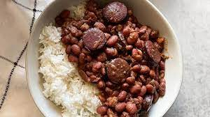

Beans and Rice

What is Beans and Rice?
Beans and rice is a simple dish that typically consists of cooked white or brown rice, which is combined with a variety of cooked beans, such as black, pinto, kidney, or cannellini beans. The dish is a staple in many cultures, particularly in Latin America, Africa and the Caribbean. It is a budget-friendly, high-protein and nutrient-dense dish. It is usually seasoned with herbs, spices, and sometimes vegetables, and can be served as a side dish or as a main course.
Ingredients
- 1 pound smoked sausage, sliced
- 1 onion, chopped, divided
- 1 green bell pepper, chopped, divided
- 1 jalapeno pepper, finely diced, divided
- 2 cups water
- 2 cubes chicken bouillon
- 1 tablespoon salt-free garlic and herb seasoning (such as Mrs. Dash®)
- 1 tablespoon Cajun seasoning blend
- 1 teaspoon red pepper flakes
- 1 bay leaf
- 3 (16 ounce) cans kidney beans, drained and rinsed
- 1 (14.5 ounce) can diced tomatoes
- Salt to taste
- 3 cups cooked white rice
Steps
- Combine sausage, half the onion, half the green bell pepper, half the jalapeno pepper, water, chicken bouillon, garlic and herb seasoning, Cajun seasoning blend, red pepper flakes, and bay leaf in a large stockpot; Bring to boil and cook, stirring occasionally, until liquid is reduced by half, 15 to 20 minutes.
- Mix kidney beans, tomatoes, remaining onion, remaining green bell pepper, and remaining jalapeno pepper into the sausage mixture; season with salt. Bring to a boil, reduce heat, and simmer until kidney bean mixture is thickened, 15 to 20 minutes. Remove and discard bay leaf.
- Spoon 1/2 cup cooked rice into 6 serving bowls; top with kidney bean mixture.